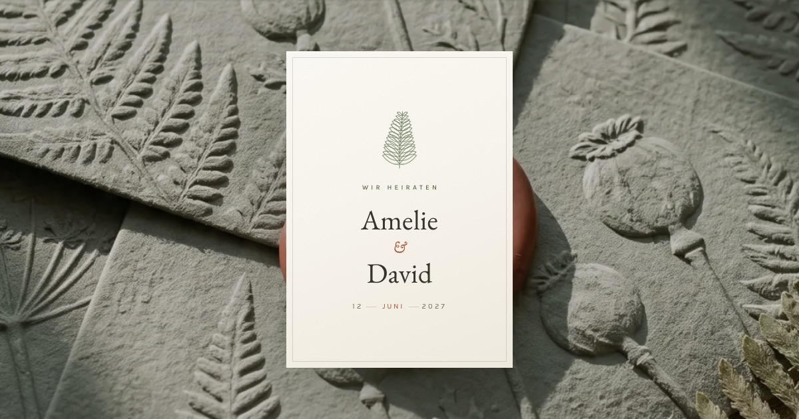
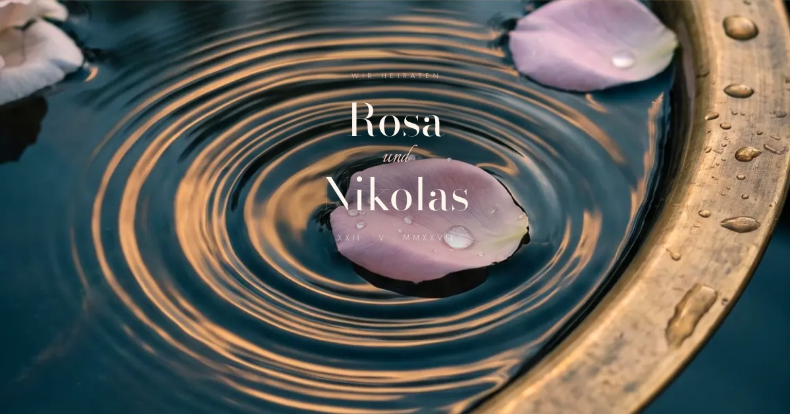
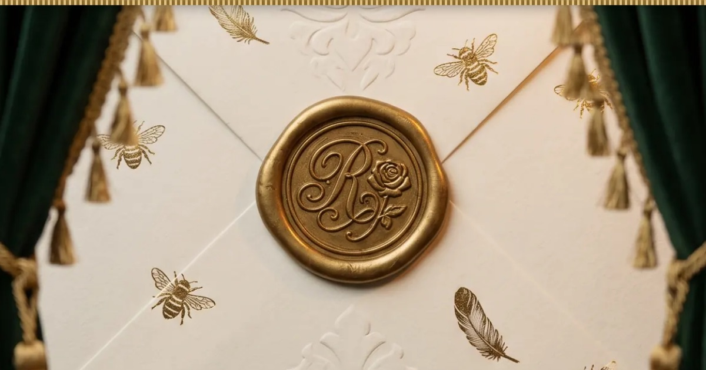
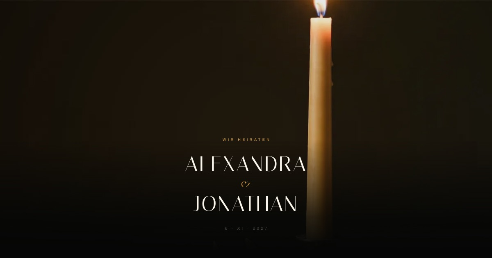
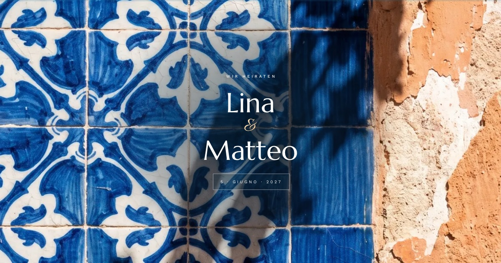
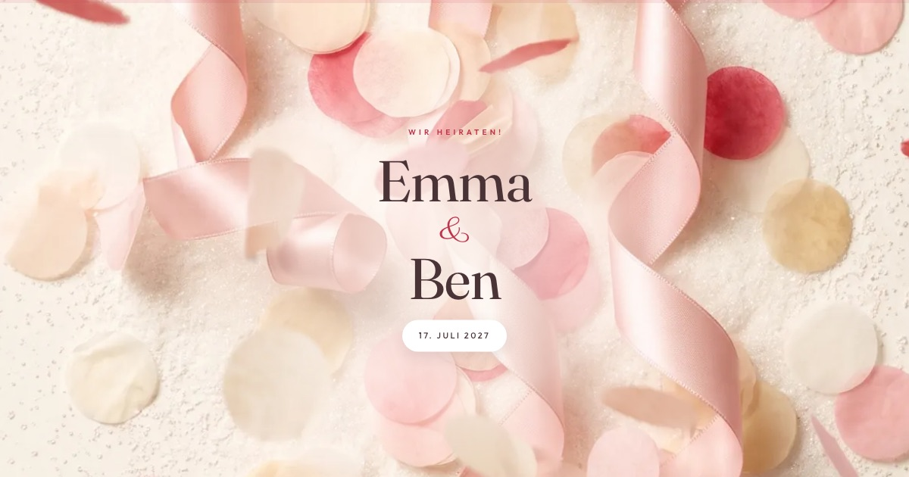
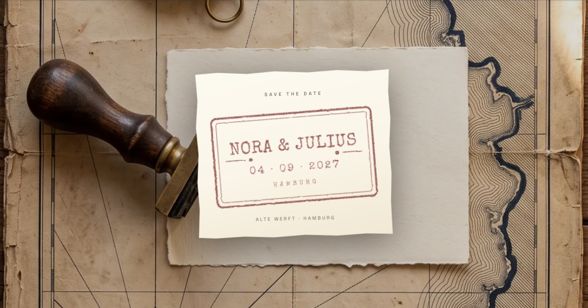
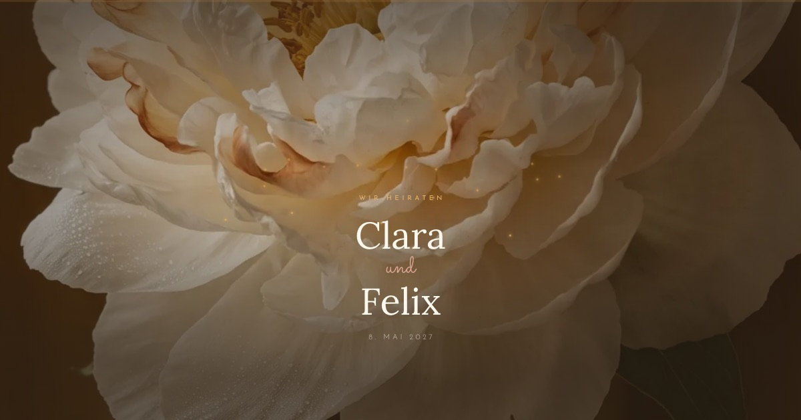
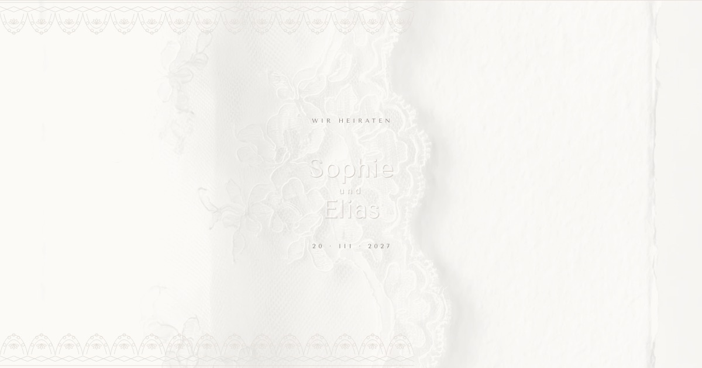
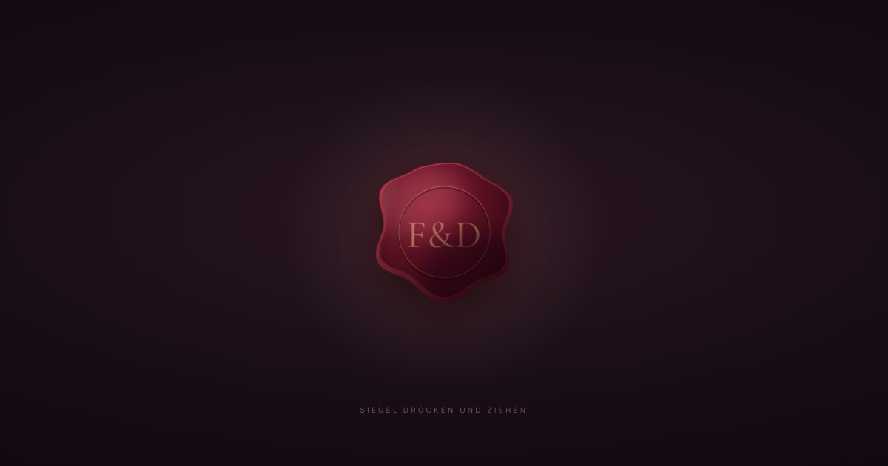

Herkunft
Ein botanisches Sammelbuch: aufgezogene Bogen, Klebeecken und Bemerkungen, die jemand mit der Hand danebengeschrieben hat.
Die Karte wird gezogen
Digitale Hochzeitskarten
Jede Karte hat ihre eigene Typografie, ihre eigene Bildwelt und einen eigenen Handgriff, mit dem sie sich öffnet. Keine ist eine andere in einer anderen Farbe.
Neun neue Karten

HerbariumEin botanisches Sammelbuch: aufgezogene Bogen, Klebeecken und Bemerkungen, die jemand mit der Hand danebengeschrieben hat.
Die Karte wird gezogen

WasserAlles steht auf einer Mittelachse, und alles hat eine Spiegelung. Die Namen liegen zuerst unter der Oberfläche.
Das Wasser wird berührt

GesellschaftsblattDie Einladung gibt sich als Klatschspalte aus: Kolumnentitel, Initialen im ersten Absatz, Zierstücke statt Linien.
Der Vorhang wird aufgezogen

KerzenlichtDie strengste der zwölf: keine Schreibschrift, kein Zierrat, nur Versalien und sehr viel Schwarz.
Das Licht folgt dem Finger

AzulejoDas Kachelraster ist nicht Hilfsmittel, sondern Motiv — bis hin zu den Farbfeldern der Kleiderordnung.
Die Wand kippt um

KonfettiDie einzige ohne eine einzige gerade Ecke. Genau eine Farbe ist kräftig, der Rest ist Zucker.
Es knallt, wo getippt wird

ReisetagebuchEin Heft, in das jemand unterwegs geschrieben hat: Einträge, Klebestreifen und eine Route, die beim Lesen mitläuft.
Ein Stempel schlägt auf

GlashausAlles kommt von unten: die Abschnitte steigen herein, die Bilder wachsen aus ihrem Bogen heraus.
Halten lässt die Knospe aufgehen

Weiß auf WeißKeine zweite Farbe, kein Kasten, kein Schatten. Die Namen sind nicht gedruckt, sondern in das Papier geprägt.
Verlangt als einzige nichts
Die ersten drei
 Prägedruck
PrägedruckGeprägte Flügel mit Satinschleife, dahinter die Einladung als Heft: fünf nummerierte Bogen mit gerissenen Rändern.
Die Schleife wird gelöst
 Wachssiegel
WachssiegelSave the Date: Wachssiegel aufbrechen, das blaue Glitzerherz freirubbeln, darunter Countdown, Termin und Ort.
Das Herz wird freigerubbelt

Nacht und GoldOsmanische Ornamentik, ausschließlich aus Strichen. Aus dem Licht im zerspringenden Wachs entstehen die Namen.
Das Siegel wird aufgebrochen
Alle Paare, Termine, Orte und Bankverbindungen sind frei erfunden. Die Schriften liegen lokal, es werden keine Daten an Dritte geladen.